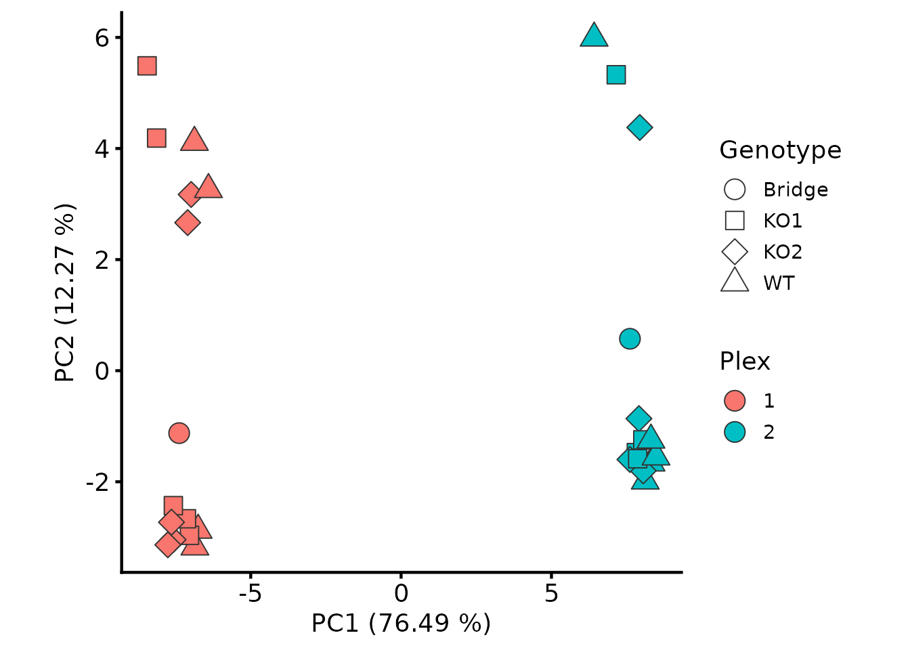
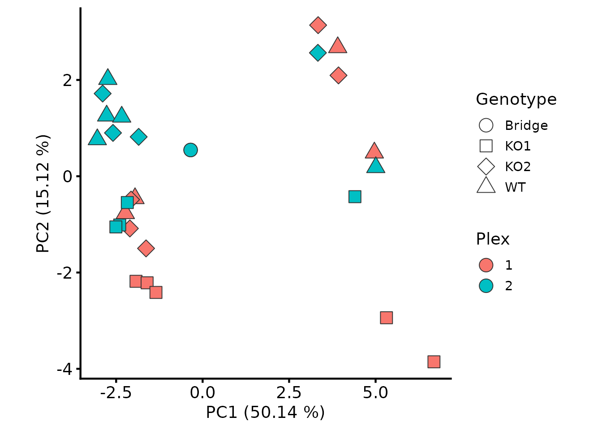
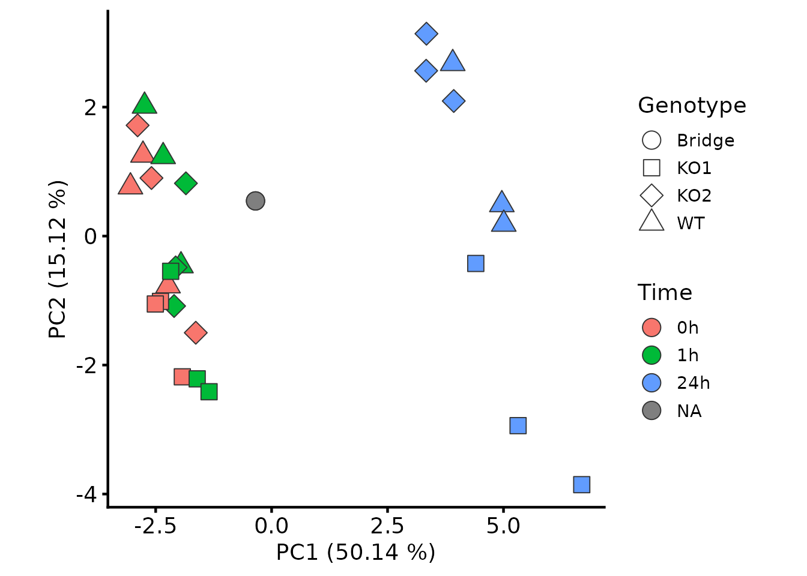

TMT workflow: multiple plexes and bridge correction
Tom Smith
2026-09-11
Source:vignettes/TMT_multiplex.Rmd
TMT_multiplex.RmdA standard TMTpro plex holds 18 samples, so any larger design has to be split over several plexes. Each plex is a separate MS run, which changes the analysis in one important way: the PSMs quantified in one plex are not the same PSMs as those quantified in another, so a protein’s abundance in plex 1 and its abundance in plex 2 are built from different peptides and are not directly comparable. Merging the plexes without correcting for this confounds plex identity with biology.
This is where TMT’s missing values live. Within a plex, the samples are quantified from the same MS1 ion and the data are close to complete; between plexes, a protein can be quantified from an entirely different set of PSMs. The fix is not imputation but a bridge channel: a pooled sample, identical in every plex, that provides a per-protein reference point for putting the plexes on a common scale.
The QC and summarisation applied to each plex are those of the TMT PSM QC and summarisation vignette, which works through them on a single plex and explains the reasoning for each. This vignette assumes them, and concentrates on what multi-plex experiments add: reading several plexes into one object, keeping them separate through processing, and joining them onto a common scale afterwards.
psm_tmt_2plex and tmt_2plex_design are a
real two-plex TMTpro 18plex experiment: a 3 × 3 factorial of three cell
lines (WT and two knockouts) against three drug treatment
timepoints, three replicates each, with one pooled bridge channel per
plex.
The experimental design
knitr::kable(tmt_2plex_design)| Sample | quantCols | runCol | Plex | Genotype | Time | Replicate |
|---|---|---|---|---|---|---|
| Bridge_1 | 126 | 1 | 1 | Bridge | NA | NA |
| KO1_0h_1 | 129C | 1 | 1 | KO1 | 0h | 1 |
| KO1_1h_1 | 132C | 1 | 1 | KO1 | 1h | 1 |
| KO1_1h_3 | 131N | 1 | 1 | KO1 | 1h | 3 |
| KO1_24h_2 | 130N | 1 | 1 | KO1 | 24h | 2 |
| KO1_24h_3 | 129N | 1 | 1 | KO1 | 24h | 3 |
| KO2_0h_1 | 132N | 1 | 1 | KO2 | 0h | 1 |
| KO2_1h_1 | 130C | 1 | 1 | KO2 | 1h | 1 |
| KO2_1h_2 | 131C | 1 | 1 | KO2 | 1h | 2 |
| KO2_24h_1 | 133C | 1 | 1 | KO2 | 24h | 1 |
| KO2_24h_2 | 134C | 1 | 1 | KO2 | 24h | 2 |
| WT_0h_2 | 127N | 1 | 1 | WT | 0h | 2 |
| WT_1h_1 | 127C | 1 | 1 | WT | 1h | 1 |
| WT_24h_1 | 134N | 1 | 1 | WT | 24h | 1 |
| WT_24h_2 | 135N | 1 | 1 | WT | 24h | 2 |
| Bridge_2 | 126 | 2 | 2 | Bridge | NA | NA |
| KO1_0h_2 | 130N | 2 | 2 | KO1 | 0h | 2 |
| KO1_0h_3 | 131N | 2 | 2 | KO1 | 0h | 3 |
| KO1_1h_2 | 133C | 2 | 2 | KO1 | 1h | 2 |
| KO1_24h_1 | 127N | 2 | 2 | KO1 | 24h | 1 |
| KO2_0h_2 | 131C | 2 | 2 | KO2 | 0h | 2 |
| KO2_0h_3 | 130C | 2 | 2 | KO2 | 0h | 3 |
| KO2_1h_3 | 128N | 2 | 2 | KO2 | 1h | 3 |
| KO2_24h_3 | 135N | 2 | 2 | KO2 | 24h | 3 |
| WT_0h_1 | 127C | 2 | 2 | WT | 0h | 1 |
| WT_0h_3 | 128C | 2 | 2 | WT | 0h | 3 |
| WT_1h_2 | 133N | 2 | 2 | WT | 1h | 2 |
| WT_1h_3 | 134N | 2 | 2 | WT | 1h | 3 |
| WT_24h_3 | 134C | 2 | 2 | WT | 24h | 3 |
Three things differ from the single-plex designs above.
quantCols holds the TMT tag rather than a sample name,
since the same tag denotes a different sample in each plex.
runCol holds the plex, and is what
QFeatures::readQFeatures uses to split the PSMs into one
assay per run. And the bridge channels are marked by a
Genotype of Bridge: they are the same pooled
material in both plexes, so they have no genotype, timepoint or
replicate of their own.
Channels that were not labelled in a given plex are simply absent from the design.
Standardising the peptide to protein assignments
Proteome Discoverer’s PSM-level export can report different sets of
protein accessions for the same peptide sequence, either because several
search engines were used and they disagree, or because leucine and
isoleucine are indistinguishable at typical collision energies and the
redundant sequence matches are reported separately. The peptide-level
export has one consistent assignment per sequence, and
update_peptide_assignments uses it to overwrite the
PSM-level assignments.
pep_inf <- system.file(
"extdata", "tmt_2plex_PeptideGroups.txt.gz",
package = "biomasslmb"
)
psms_2plex <- biomasslmb::update_peptide_assignments(
psm_tmt_2plex, pep_inf, verbose = TRUE)
#> 11619 features found from 504 master proteins => Input
#> 11590 features found from 506 master proteins => Updating peptide assignmentsThe output is shorter than the input because the peptide-level export selects one of the leucine/isoleucine-equivalent sequences, so PSMs matched to the sequences it did not select are dropped.
This step is worth doing before
remove_redundant_psm_quant below, which refuses to run on
inconsistent assignments — it identifies redundant quantification by
looking for duplicate rows, and cannot do so reliably if the same
spectrum appears under two different protein assignments.
Reading several plexes into one QFeatures object
Passing runCol = 'Plex' splits the PSM table on its
Plex column and creates one assay per plex, matching
channels to plexes through the runCol column of the
design.
tmt_qf_2plex <- QFeatures::readQFeatures(
assayData = psms_2plex,
colData = tmt_2plex_design,
runCol = "Plex")
#> Checking arguments.
#> Loading data as a 'SummarizedExperiment' object.
#> Splitting data in runs.
#> Formatting sample annotations (colData).
#> Formatting data as a 'QFeatures' object.
names(tmt_qf_2plex) <- paste0("psms_raw_", names(tmt_qf_2plex))
names(tmt_qf_2plex)
#> [1] "psms_raw_1" "psms_raw_2"Every assay gets a column for every tag used anywhere in the
experiment, so the assays currently include channels that were not
labelled in that plex. Those columns are entirely NA and
have no design information attached, so we remove them.
tmt_qf_2plex <- tmt_qf_2plex[, !is.na(tmt_qf_2plex$Genotype)]
lapply(experiments(tmt_qf_2plex), dim)
#> $psms_raw_1
#> [1] 5738 15
#>
#> $psms_raw_2
#> [1] 5852 14The remaining column names combine the plex and the tag, since neither identifies a sample by itself.
Processing each plex separately
Everything up to and including summarisation happens within a plex,
for the same reason the plexes cannot be merged yet:
diff.median normalisation compares channels within a run,
signal:noise and co-isolation are properties of a spectrum in a
particular run, and summing PSMs across runs would mix quantification
from different ions. The steps themselves are those of the single-plex
pipeline, applied in a loop.
remove_redundant_psm_quant is the one addition. Where
several search engines have matched the same spectrum, the PSM export
contains one row per engine per spectrum, with identical quantification;
keeping them would count the same measurement more than once during
summarisation.
plexes <- c("1", "2")
contaminant_accessions <- biomasslmb::get_contaminant_fasta_accessions(
system.file("extdata", "0602_Universal_Contaminants.fasta.gz",
package = "biomasslmb"))
contaminant_accessions <- c(contaminant_accessions,
sub("^Cont_", "", contaminant_accessions))
for (plex in plexes) {
raw <- paste0("psms_raw_", plex)
filtered <- paste0("psms_filtered_", plex)
normalised <- paste0("psms_norm_", plex)
sn_filtered <- paste0("psms_filtered_sn_", plex)
for_sum <- paste0("psms_filtered_forSum_", plex)
tmt_qf_2plex[[raw]] <- biomasslmb::update_average_sn(tmt_qf_2plex[[raw]])
tmt_qf_2plex[[filtered]] <- biomasslmb::filter_features_pd_dda(
tmt_qf_2plex[[raw]],
contaminant_proteins = contaminant_accessions,
filter_contaminant = TRUE,
filter_associated_contaminant = TRUE,
unique_master = TRUE)
tmt_qf_2plex <- QFeatures::filterFeatures(
tmt_qf_2plex, ~ Rank == 1, i = filtered)
tmt_qf_2plex[[filtered]] <- biomasslmb::remove_redundant_psm_quant(
tmt_qf_2plex[[filtered]])
# Normalise on the log2 scale, then return to the original scale
tmt_qf_2plex[[normalised]] <- QFeatures::normalize(
QFeatures::logTransform(tmt_qf_2plex[[filtered]], base = 2),
method = "diff.median")
assay(tmt_qf_2plex[[normalised]]) <- 2^assay(tmt_qf_2plex[[normalised]])
tmt_qf_2plex[[sn_filtered]] <- biomasslmb::filter_TMT_PSMs(
tmt_qf_2plex[[normalised]],
inter_thresh = 50, sn_thresh = 5, spsmm_thresh = 65)
tmt_qf_2plex[[for_sum]] <- biomasslmb::filter_features_per_protein(
QFeatures::filterNA(tmt_qf_2plex[[sn_filtered]], 0), min_features = 2)
tmt_qf_2plex <- QFeatures::aggregateFeatures(
tmt_qf_2plex,
i = for_sum,
fcol = "Master.Protein.Accessions",
name = paste0("protein_", plex),
fun = base::colSums)
tmt_qf_2plex[[paste0("protein_", plex)]] <- QFeatures::logTransform(
tmt_qf_2plex[[paste0("protein_", plex)]], base = 2)
}As in the single-plex pipeline, we remove PSMs with any missing value and summarise by summing. Even at 18 channels, only around a tenth of the PSMs surviving the signal:noise filter have a missing value in any channel, so this costs little.
Joining the plexes
QFeatures::joinAssays merges the per-plex protein assays
into one, matching on row name.
tmt_qf_2plex <- QFeatures::joinAssays(
tmt_qf_2plex,
i = paste0("protein_", plexes),
name = "protein_joined")
tmt_qf_2plex <- sync_coldata(tmt_qf_2plex, "protein_joined")
dim(tmt_qf_2plex[["protein_joined"]])
#> [1] 284 29The result holds every protein quantified in either plex, with
NA where a protein was quantified in one plex but not the
other. Proteins quantified in only one plex are not automatically a
problem, but they carry no information about the plex difference and
cannot be corrected for it, so a testability filter later will usually
remove them.
Why the plexes are not yet comparable
The bridge channels are the same pooled material, so in the absence of a plex effect their protein abundances should agree. Plotting one against the other shows they do not.
bridge_cols <- rownames(colData(tmt_qf_2plex))[
colData(tmt_qf_2plex)$Genotype == "Bridge"]
bridge_quant <- assay(tmt_qf_2plex[["protein_joined"]])[, bridge_cols]
plot(bridge_quant,
xlab = "Bridge, plex 1 (log2)", ylab = "Bridge, plex 2 (log2)")
sd(bridge_quant[, 1] - bridge_quant[, 2], na.rm = TRUE)
#> [1] 0.8740993The consequence for the experiment as a whole is visible in a PCA: plex, not biology, is the dominant source of variance.
How much that matters for the final result depends on how the conditions are distributed across the plexes, and it is not always a question of power. Where a contrast is balanced across plexes the plex effect inflates the residual variance and costs you hits you should have found; where it is confounded with plex, the uncorrected analysis reports differences that are the plex rather than the biology.
biomasslmb::plot_pca(tmt_qf_2plex, i = "protein_joined",
colour_by = "Plex", shape_by = "Genotype")
Bridge correction
bridge_normalise takes, for each protein, the difference
between its abundance in a plex’s bridge channel and its abundance
across the plexes’ bridge channels, and subtracts that from every sample
in that plex. On the log2 scale a subtraction is a ratio, so this
rescales each plex by the per-protein factor needed to bring its bridge
into line with the others.
bridge_cols identifies the bridge channels. It takes a
logical vector rather than a column name, because designs record which
channels are the pooled reference in whatever way suits them — a
Type column, a Pool prefix on a sample
identifier — and a predicate works with all of them.
protein_joined <- tmt_qf_2plex[["protein_joined"]]
tmt_qf_2plex[["protein_bridge_norm"]] <- biomasslmb::bridge_normalise(
protein_joined,
plex_col = "Plex",
bridge_cols = protein_joined$Genotype == "Bridge")
#> 284 features across 2 plexes
#> plex 1: 1 bridge channel(s), median absolute correction 0.302
#> plex 2: 1 bridge channel(s), median absolute correction 0.282The reported correction is the size of the plex effect being removed: a median of around 0.3 on the log2 scale is a factor of about 1.2 in abundance, applied per protein.
A protein needs a bridge value in a plex to be placed on the common
scale. Where one is missing but the protein was quantified in that
plex’s samples, those samples are set to NA by default,
since there is no basis for comparing them with the other plexes;
on_missing offers the alternatives of dropping the protein
or leaving the plex uncorrected. Proteins absent from a plex altogether
are unaffected — there is nothing there to correct.
The bridge channels are now identical by construction, so their agreement is not evidence that the correction worked. The evidence is what happened to the other samples: plex is no longer the dominant source of variance.
biomasslmb::plot_pca(tmt_qf_2plex, i = "protein_bridge_norm",
colour_by = "Plex", shape_by = "Genotype")
Colouring the same PCA by timepoint instead shows what the plex effect was hiding: the 24 hour samples separate from the earlier timepoints along PC1, in both plexes and in all three cell lines.
biomasslmb::plot_pca(tmt_qf_2plex, i = "protein_bridge_norm",
colour_by = "Time", shape_by = "Genotype")
Removing the bridge channels
The bridge channels have served their purpose and are not samples of the experiment, so we drop them. With the plexes now on a common scale, the tag-and-plex column names can be replaced by the sample names from the design.
protein_se <- tmt_qf_2plex[["protein_bridge_norm"]]
protein_se <- protein_se[, protein_se$Genotype != "Bridge"]
colnames(protein_se) <- protein_se$Sample
tmt_qf_2plex[["protein"]] <- protein_se
colData(tmt_qf_2plex[["protein"]])[1:3, ]
#> DataFrame with 3 rows and 7 columns
#> Sample quantCols runCol Plex Genotype Time
#> <character> <character> <numeric> <factor> <character> <character>
#> WT_0h_2 WT_0h_2 127N 1 1 WT 0h
#> WT_1h_1 WT_1h_1 127C 1 1 WT 1h
#> KO1_24h_3 KO1_24h_3 129N 1 1 KO1 24h
#> Replicate
#> <character>
#> WT_0h_2 2
#> WT_1h_1 1
#> KO1_24h_3 3If there is no bridge channel
Bridge channels cost one channel per plex, and experiments do arrive
without them. The usual alternative is internal reference scaling: use
each plex’s own channels as the per-protein reference in place of the
bridge, which is
bridge_cols = rep(TRUE, ncol(protein_joined)). This assumes
that the average sample is equivalent in every plex, which holds when
the conditions are balanced across plexes and fails when they are not —
an unbalanced split can remove the biological difference along with the
plex effect. Including plex as a term in the limma design
matrix is another option, and models the plex offset rather than
removing it, but it cannot be used for analyses that need a corrected
quantification matrix.
If you are still designing the experiment, include a bridge channel: it makes the correction explicit, checkable, and independent of how the conditions are distributed across plexes.
Where to go next
The bridge-normalised protein-level abundances are ready for the
exploration and testing described in the data exploration and
statistical testing vignette. Include Plex among the
variables you inspect there: bridge correction should have removed the
plex effect, and a PCA still separating on plex means it did not.
Getting help
If your experiment does not fit what this article assumes, or a result looks wrong, please get in touch with Tom Smith (tsmith@mrclmb.ac.uk) rather than guessing — it is far easier to help while an analysis is in progress than to unpick a decision afterwards, and easier still before the samples are run. Getting started sets out which article applies to which experiment.
sessionInfo()
#> R version 4.5.3 (2026-03-11)
#> Platform: x86_64-pc-linux-gnu
#> Running under: Ubuntu 24.04.5 LTS
#>
#> Matrix products: default
#> BLAS: /usr/lib/x86_64-linux-gnu/openblas-pthread/libblas.so.3
#> LAPACK: /usr/lib/x86_64-linux-gnu/openblas-pthread/libopenblasp-r0.3.26.so; LAPACK version 3.12.0
#>
#> locale:
#> [1] LC_CTYPE=C.UTF-8 LC_NUMERIC=C LC_TIME=C.UTF-8
#> [4] LC_COLLATE=C.UTF-8 LC_MONETARY=C.UTF-8 LC_MESSAGES=C.UTF-8
#> [7] LC_PAPER=C.UTF-8 LC_NAME=C LC_ADDRESS=C
#> [10] LC_TELEPHONE=C LC_MEASUREMENT=C.UTF-8 LC_IDENTIFICATION=C
#>
#> time zone: UTC
#> tzcode source: system (glibc)
#>
#> attached base packages:
#> [1] stats4 stats graphics grDevices utils datasets methods
#> [8] base
#>
#> other attached packages:
#> [1] ggplot2_4.0.3 biomasslmb_0.1.0
#> [3] QFeatures_1.20.0 MultiAssayExperiment_1.36.2
#> [5] SummarizedExperiment_1.40.0 Biobase_2.70.0
#> [7] GenomicRanges_1.62.1 Seqinfo_1.0.0
#> [9] IRanges_2.44.0 S4Vectors_0.48.1
#> [11] BiocGenerics_0.56.0 generics_0.1.4
#> [13] MatrixGenerics_1.22.0 matrixStats_1.5.0
#>
#> loaded via a namespace (and not attached):
#> [1] tidyselect_1.2.1 dplyr_1.2.1 farver_2.1.2
#> [4] blob_1.3.0 Biostrings_2.78.0 S7_0.2.2
#> [7] fastmap_1.2.0 lazyeval_0.2.3 XML_3.99-0.24
#> [10] digest_0.6.39 lifecycle_1.0.5 cluster_2.1.8.2
#> [13] ProtGenerics_1.42.0 survival_3.8-6 KEGGREST_1.50.0
#> [16] RSQLite_3.53.3 magrittr_2.0.5 genefilter_1.92.0
#> [19] compiler_4.5.3 rlang_1.3.0 sass_0.4.10
#> [22] tools_4.5.3 igraph_2.3.3 yaml_2.3.12
#> [25] corrplot_0.95 knitr_1.52 labeling_0.4.3
#> [28] S4Arrays_1.10.1 htmlwidgets_1.6.4 bit_4.6.0
#> [31] DelayedArray_0.36.1 plyr_1.8.9 RColorBrewer_1.1-3
#> [34] abind_1.4-8 withr_3.0.3 purrr_1.2.2
#> [37] desc_1.4.3 grid_4.5.3 xtable_1.8-8
#> [40] scales_1.4.0 MASS_7.3-65 cli_3.6.6
#> [43] rmarkdown_2.32 crayon_1.5.3 ragg_1.5.2
#> [46] otel_0.2.0 robustbase_0.99-7 httr_1.4.9
#> [49] reshape2_1.4.5 BiocBaseUtils_1.12.0 DBI_1.3.0
#> [52] cachem_1.1.0 stringr_1.6.0 splines_4.5.3
#> [55] AnnotationDbi_1.72.0 AnnotationFilter_1.34.0 XVector_0.50.0
#> [58] vctrs_0.7.3 Matrix_1.7-4 jsonlite_2.0.0
#> [61] naniar_1.1.0 visdat_0.6.0 bit64_4.8.6
#> [64] clue_0.3-68 systemfonts_1.3.2 tidyr_1.3.2
#> [67] jquerylib_0.1.4 annotate_1.88.0 glue_1.8.1
#> [70] DEoptimR_1.2-1 pkgdown_2.2.1 uniprotREST_1.0.0
#> [73] stringi_1.8.9 gtable_0.3.6 tibble_3.3.1
#> [76] pillar_1.11.1 htmltools_0.5.9 R6_2.6.1
#> [79] textshaping_1.0.5 evaluate_1.0.5 lattice_0.22-9
#> [82] backports_1.5.1 png_0.1-9 memoise_2.0.1
#> [85] bslib_0.12.0 Rcpp_1.1.2 checkmate_2.3.4
#> [88] SparseArray_1.10.10 xfun_0.60 MsCoreUtils_1.22.1
#> [91] fs_2.1.0 pkgconfig_2.0.3